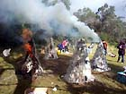

| How to do a TePee Firing
as demonstrated by Judy Armstrong and Jan Barnes
This type of firing was originally a Native
American technique, although many other cultures have used
similar techniques, where greenware or bisque ware is placed in
a shallow pit and covered with twigs and branches, then lit and
allowed to burn down. Such a firing can reach temperatures of around
1500o F (800o C). It was revived and popularized
in the 20th C by American studio-potter Peter Voulkos. In this variation,
slip-coated paper covers the cone, allowing for a hotter burning.
It probably also slows the firing down a bit since it dampens the
palings and also creates some reduction by reducing the airflow,
thereby producing richer colors on the ware. Some tepee firers put
up to 20 layers of slip-coated paper around their teepees, which
often remain standing after all the wood has burned away. Using
only 2-3 layers, it tends to collapse gently down onto the ware.
The reason we call it "tepee" instead of "teepee"
is because the different method we use. Our way of tepee is a variant
on the paper kiln which has many layers of paper and slip and which
is sometimes left standing when the firing has finished. It just
depends on the layers of paper and slip the artist feels gets the
best results.
Disclaimer: The instructions below
are incomplete and are meant as a guide only. Firings of this type
can be dangerous and should only be done under the supervision of
an experienced adult - preferably a potter! Practitioners
of any type of firing need to take adequate safety precautions.
Use of heavy duty leather gloves and a gas mask are recommended.
Due to smoke generation, this type of firing may not be suitable
in an urban environment. In some cases, fire authorities may need
to be notified in advance of such an event. Please also see the
Terms of Use.
|
|
|
| 1. Find a spot where smoke won't be a hazard. Level
the ground to a diameter of about 3' (1 m), placing bricks around
the edge for supporting the palings. |
2. Spread sawdust on the ground to a thickness
of about 3" (7-8 cm). Sprinkle with salt, copper carbonate
(careful - toxic!), seaweed or other materials that are known
to give interesting effects. Place a single layer of pots
and sprinkle with more copper carb and salt. |
3. Cover with newspaper to protect the work from dripping
slip (see point 6) and add dry kindling in a rough cone shape. |
|
|
|
4. Start to build the skeleton of
the tepee by laying palings in a cone teepee or shape. |
5. The palings are held together with
wire or a metal ring. Leave a small hole on one side for lighting.
|
6. Getting ready to apply the slip-coteed
paper to the cone. |
|
|
|
7. Dip glossy paper into slip, covering
the entire tepee except the lighting hole and the top which
will be the chimney. Use between 2-5 layers of slipped paper,
more if you're feeling energetic! |
8. Applying the slip and slip coated
paper. |
9. Light the 'kiln' through the hole
you have left on one side. |
|
|
 |
10. Ignition! |
11. The tepee kilns firing away. |
12. Another angle... |
|
|
|
13. Smouldering, after burning down |
14. The tepee will burn down leaving
the ware to 'bake' in the hot ashes. These will cool down
after a few hours after which the pots can be removed! |
14. Example of a fired pot showing
flashings from salt, copper carbonate and seaweed by Jan Barnes:
'Driftwood'. |
| |
|
|
16. Fired piece by Judy Armstrong. |
17. And another one by Judy. |
18. Jan and Judy pose next to one
of their tepee 'kilns'. |
Article ©
The Authors
Judy Armstrong may be contacted at
Jan Barnes may be contacted at
Related Links: How to do a Pit
Firing
Tips:
- Additions of grog or volcanic ash 'open up' the clay and make
it more resistant to heat shock.
- The best color results can be achieved with iron bearing, or
red clays.
- Bisque firing the work first helps to prevent shattering and
cracking.
More Articles
|
{kind=link}
{kind=link}
{kind=link}
{kind=link}
{kind=link}
{kind=link}
{kind=link}
{kind=link}
{kind=link}
{kind=link}
{kind=link}
{kind=link}
{kind=link}
{kind=link}
{kind=link}
{kind=link}
{kind=link}
{kind=link}